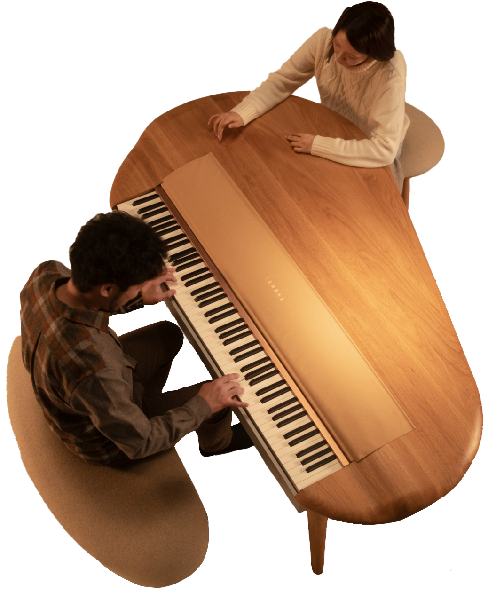
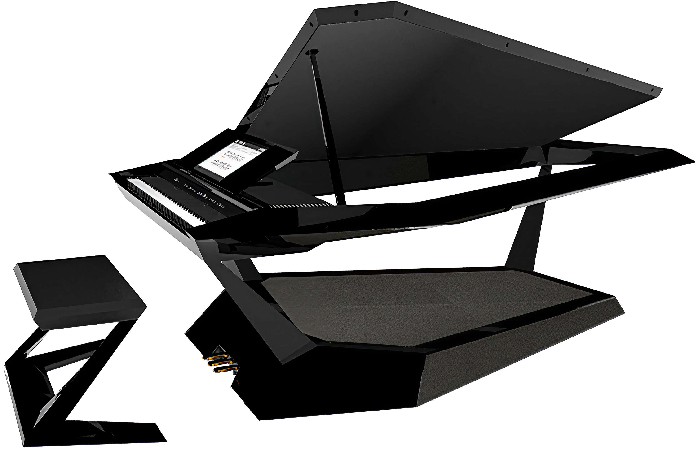

もしピアノが、単なる楽器以上の存在になれたら？
What if the piano could be more than just an instrument?
それは…
It could be…

日常生活の
a part 一部
of daily life
ア∙ラウンド
ヤマハ
2019年
A∙ROUND
Yamaha
2019

画期的な a ground-
breaking デザイン
オブ design object
ジェクト
"Facet" グランドピアノ
ローランド
2015年〜2020年
Facet Grand Piano
Roland
2015–2020

a space
人々が to
集う場
gather
キー・ビトゥイーン・ピープル
ヤマハ
2008年、2020年
Key Between People
Yamaha
2008, 2020

歴史を a way
to reimagine
再解釈 history
する手段
おとのかご
塙哲平
2021
Sound Cage
Hanawa Teppei
2021
…それだけでなく、もっとたくさんの可能性が。
…and so much more.